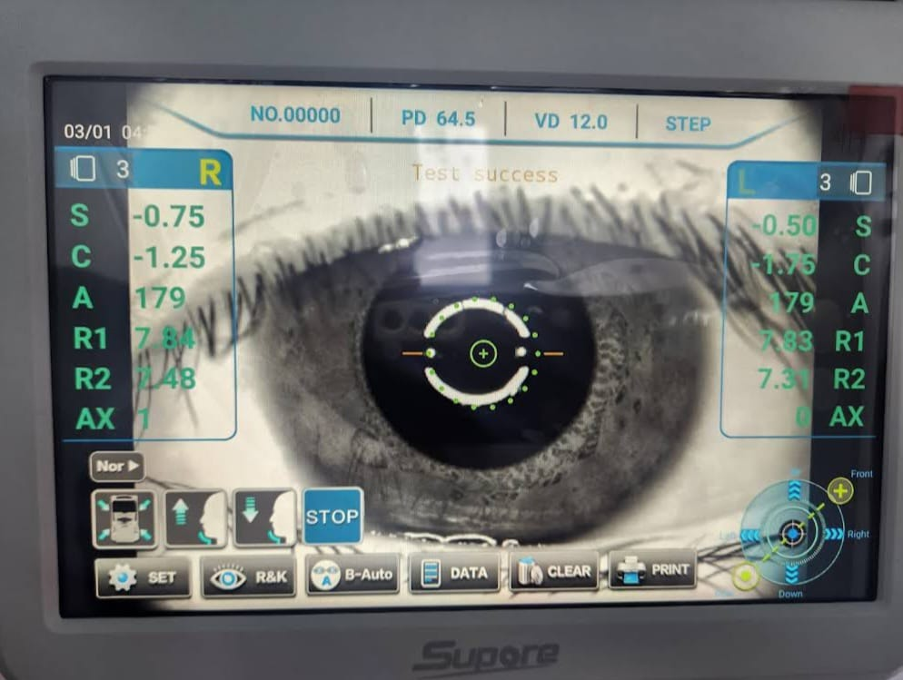
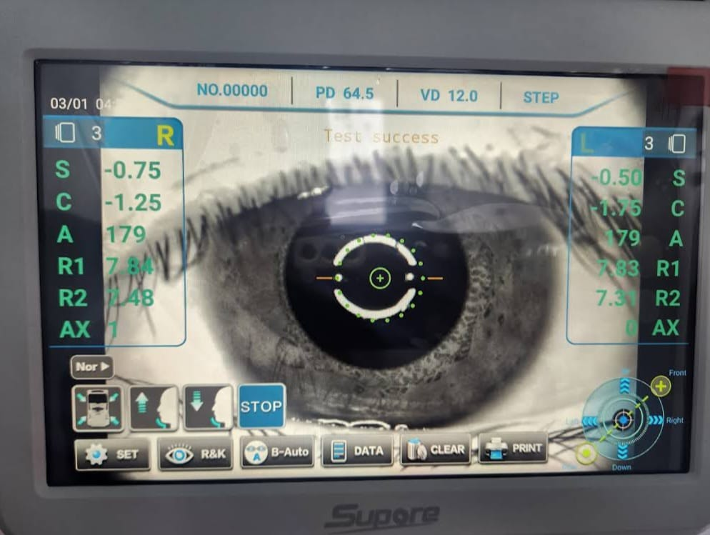

Llámanos +52 771 220 6340
 

Desde un inicio se ha dado una curva de crecimiento acelerada tanto en clientela, servicios prestados, como en la oferta de aros y lentes para los clientes, habiendo gran variedad en diseños para escoger por forma, marca, tamaño, color y estilo.
Comprometida con la excelencia, pticas del Valle ofrece productos de la más alta calidad, respaldados por tecnología óptica de vanguardia. De esta manera, cada persona que confía su salud visual en la empresa recibe soluciones modernas, confiables y adaptadas a sus necesidades.
Brindar atención integral en salud visual, con servicios accesibles y productos de calidad que mejoren la vida de nuestros pacientes, garantizando confianza y satisfacción en cada visita.

Ser la clínica líder en el cuidado de la salud ocular en la región, reconocida por su innovación, compromiso humano y excelencia en cada servicio que ofrecemos.